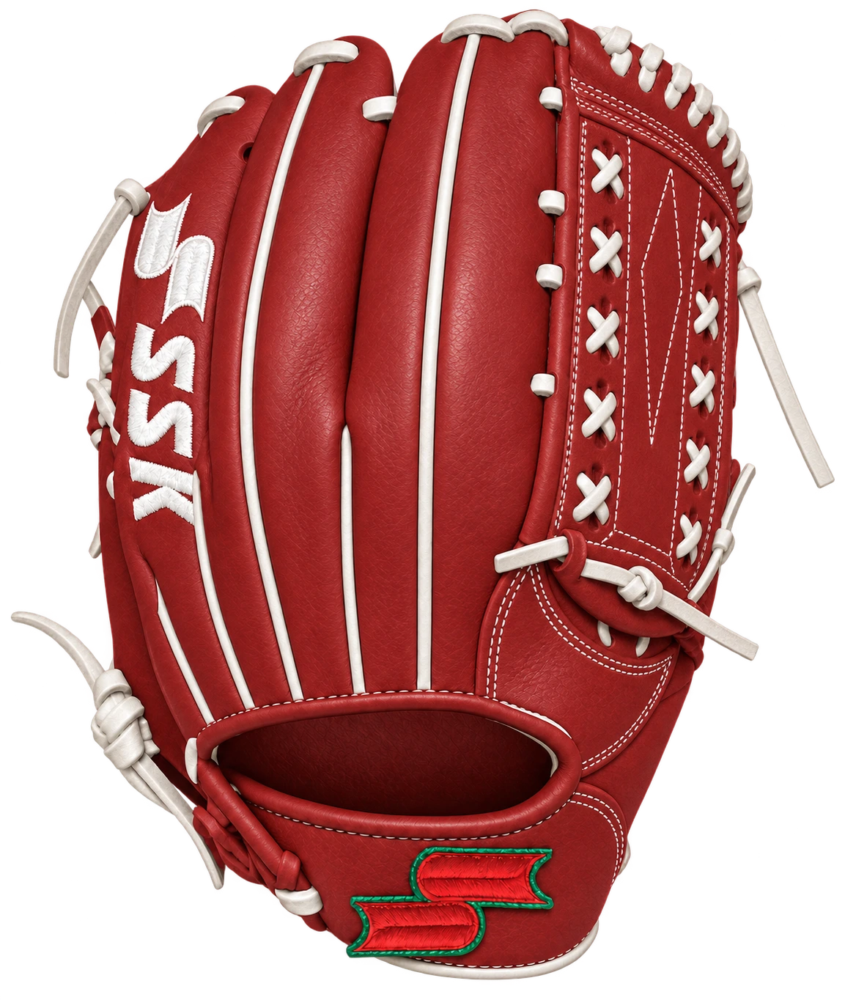
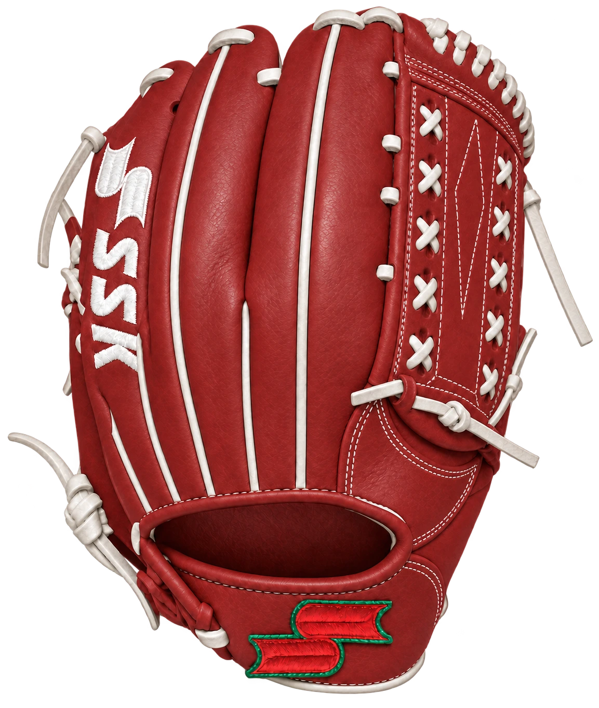
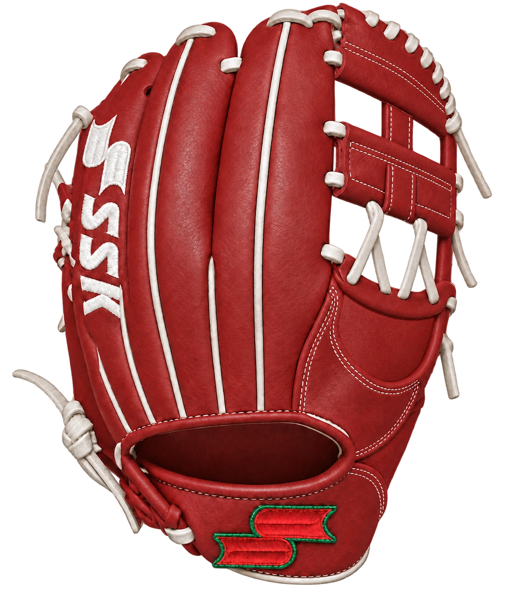
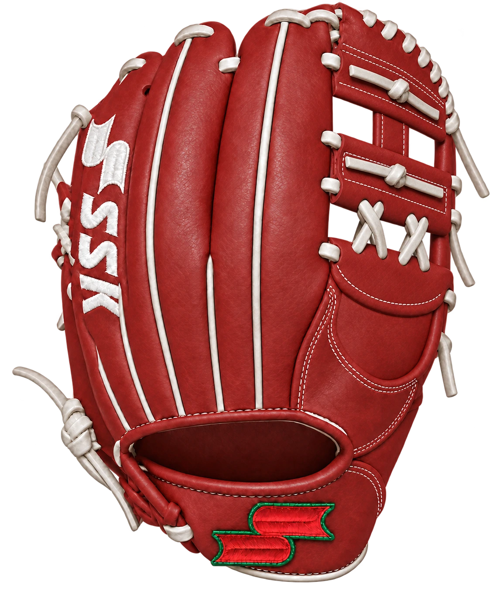
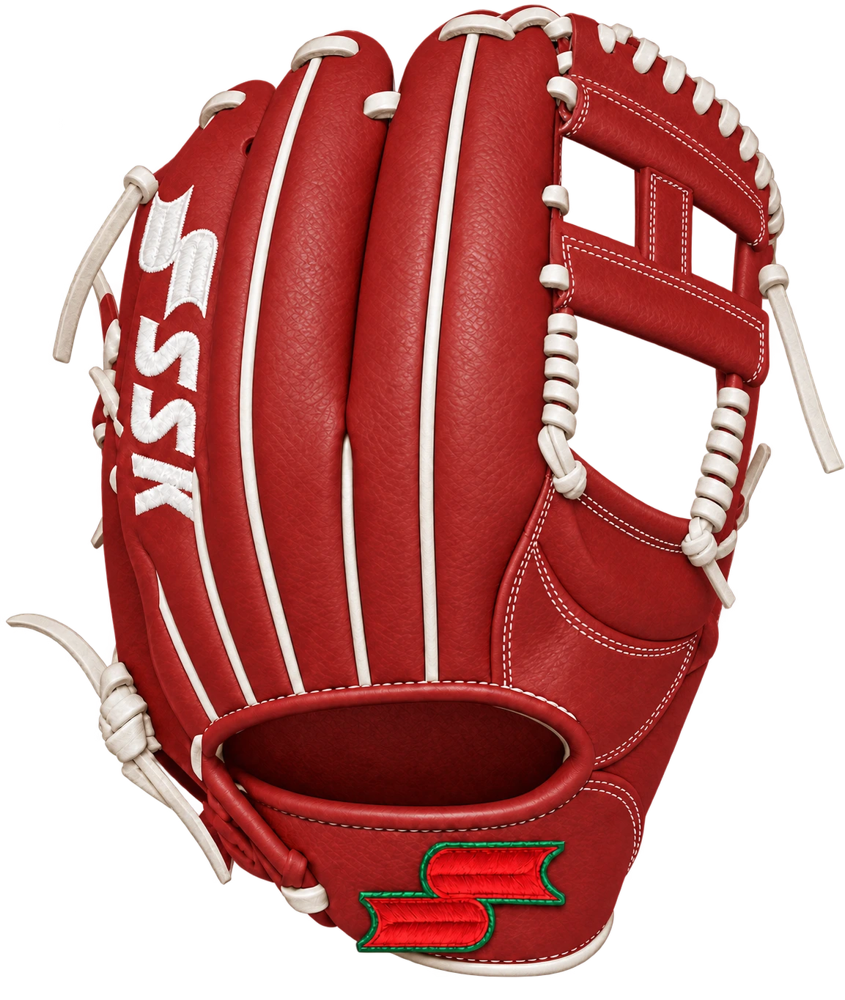
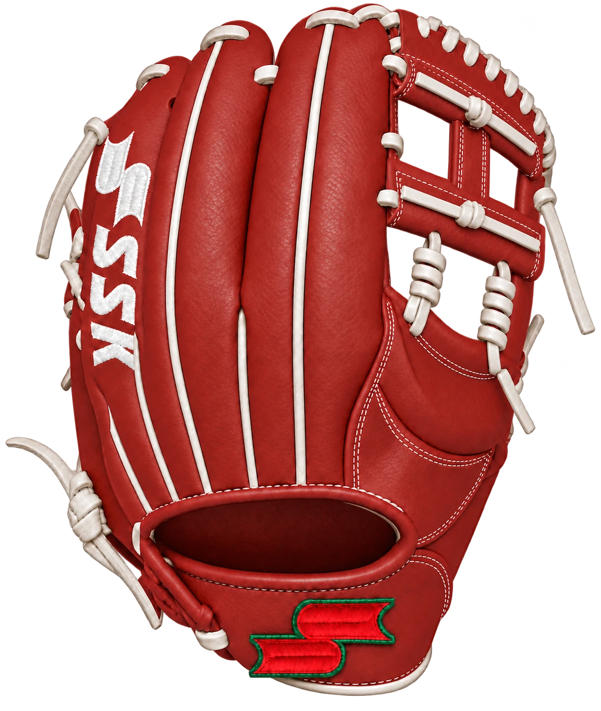
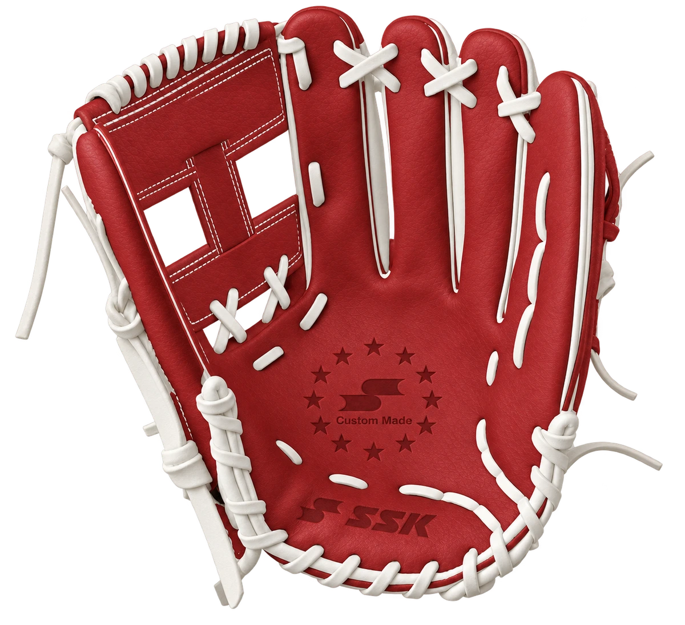
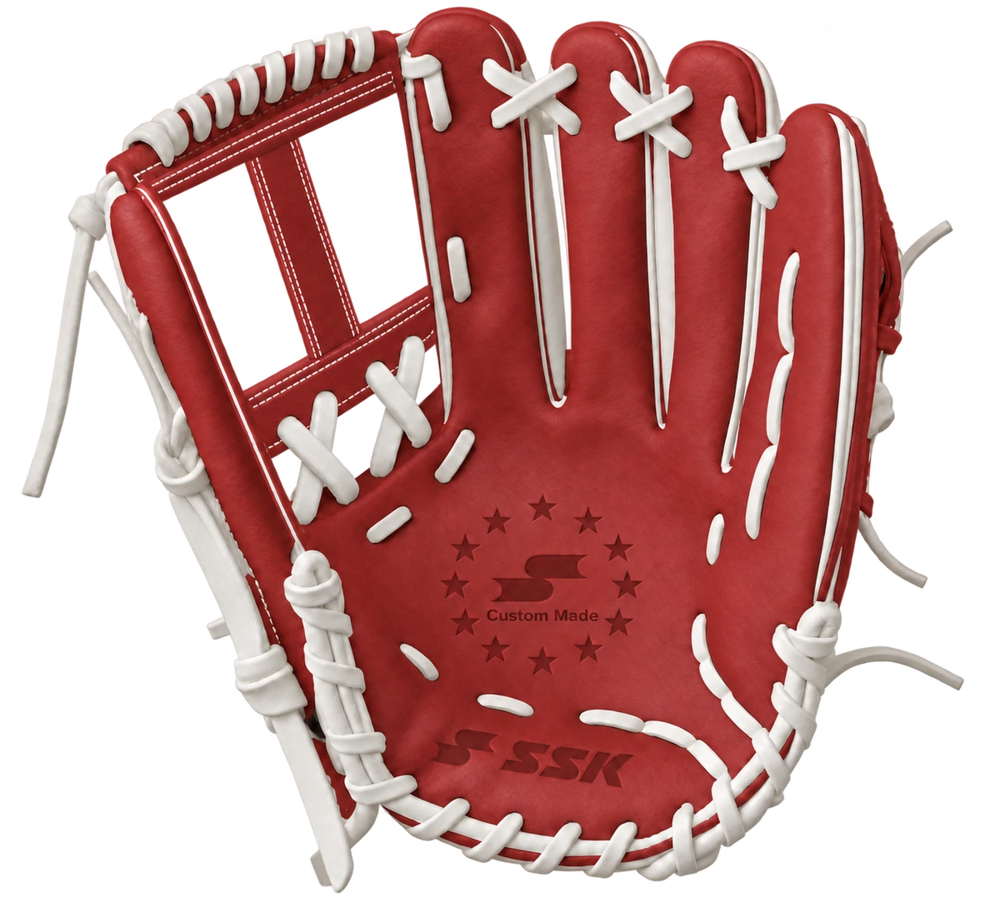
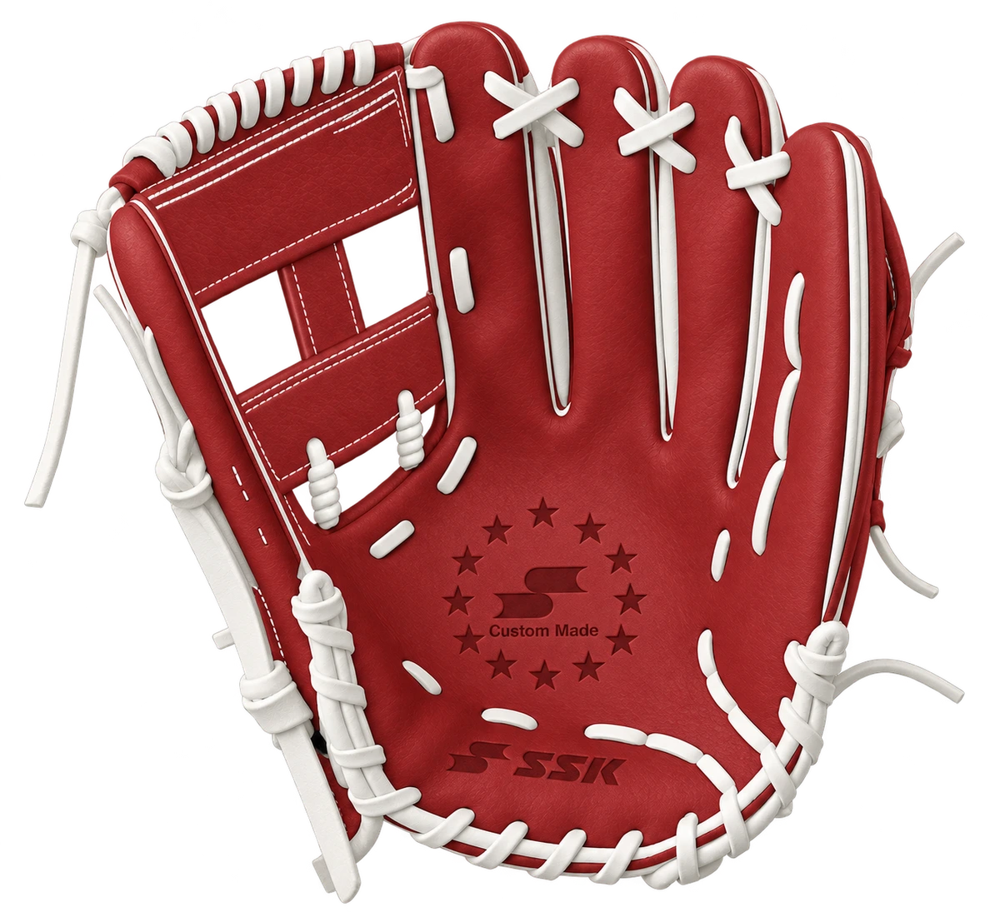
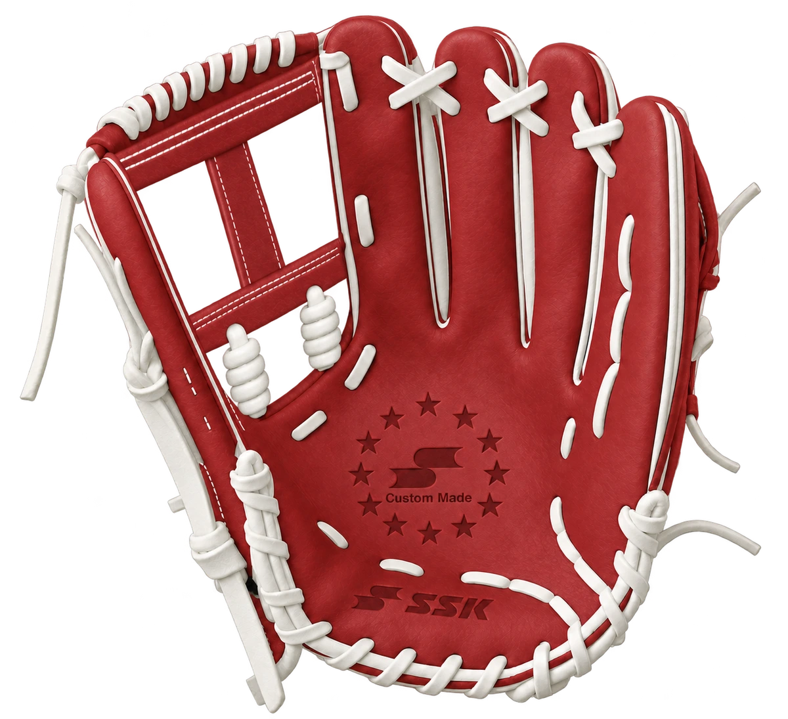

Closed Diamond Net · Achterkant
De twee kleine lusjes onder de onderste webrand zijn verwijderd. De grote knoop blijft.




Beide horizontale leerbalken van de I-webs zijn smaller gemaakt. Klik op een beeld om het origineel op volledige resolutie te openen.
Nieuwe beeldproeven ter controle. De vijf beelden vervangen nog geen inkleurbare lagen. Transparante randen bevatten nog enkele losse pixels; de exacte fabriekspasvorm is niet bewezen.
De twee kleine lusjes onder de onderste webrand zijn verwijderd. De grote knoop blijft.


Compactere onderste kruisverbindingen en horizontale veterbanen volgens de webreferentie.


Twee spiraalverbindingen binnen de onderste opening; geen spiralen rond de buitenste stijlen.


Beide horizontale leerbalken smaller; twee grotere kruisverbindingen.


Beide horizontale leerbalken smaller; twee grotere spiraalverbindingen.

